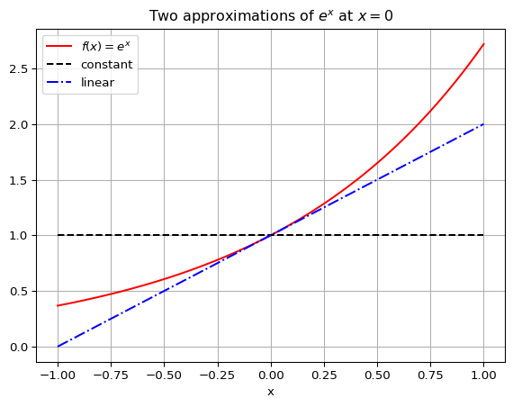
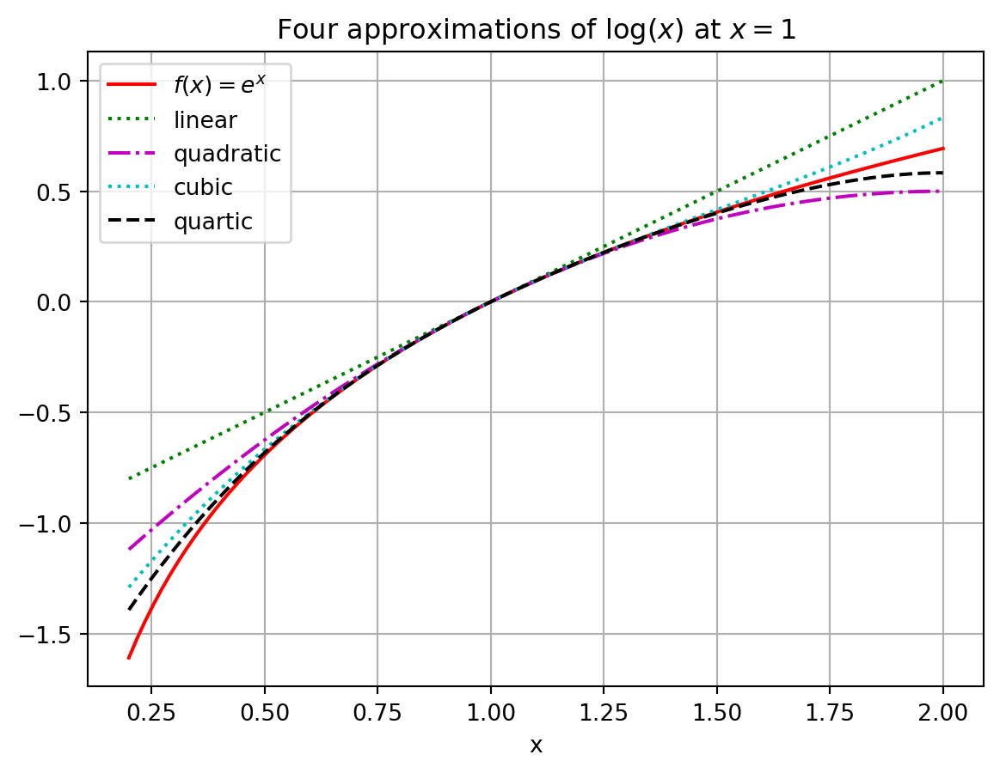
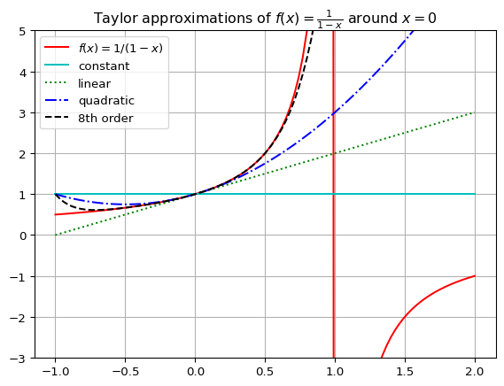
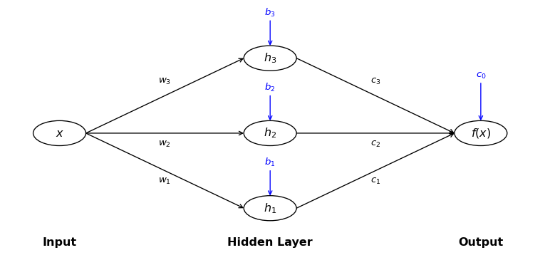
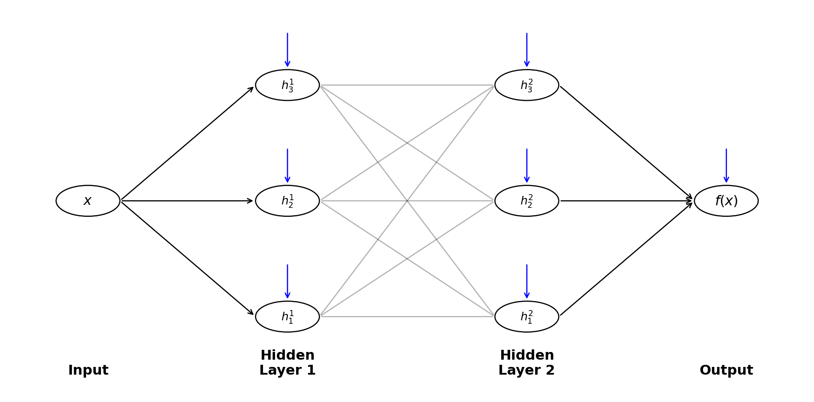
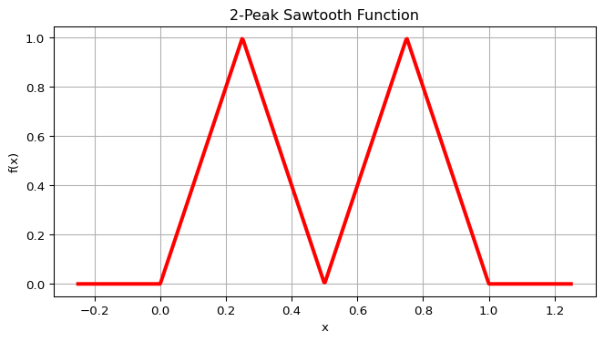
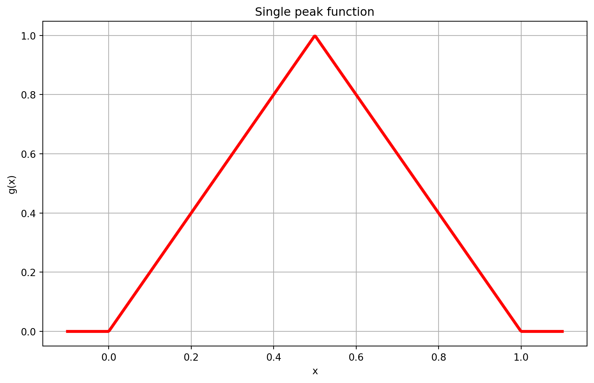
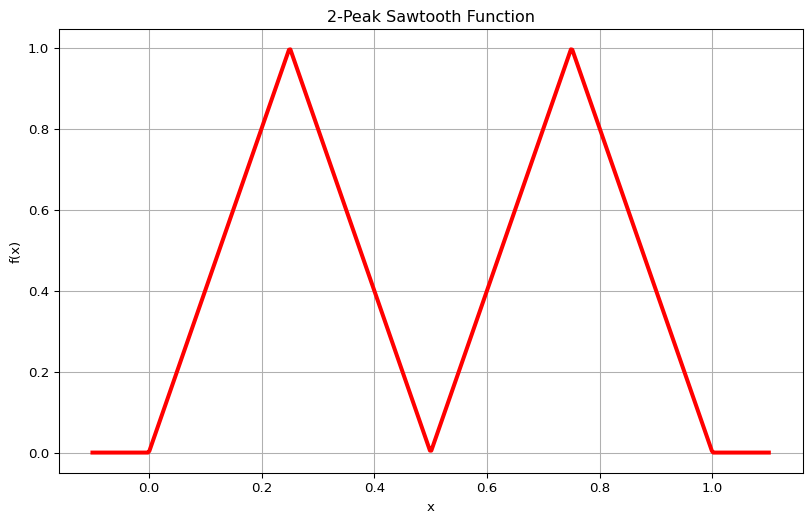

2 Functions
How does a computer understand a function like \(f(x) = e^x\) or \(f(x) = \sin(x)\) or \(f(x) = \log(x)\)? What happens under the hood, so to speak, when you ask a computer to do a computation with one of these functions? A computer is good at arithmetic operations, but working with transcendental functions like these, or really any other sufficiently complicated functions for that matter, is not something that comes naturally to a computer. What is actually happening under the hood is that the computer only approximates the functions.
2.1 Polynomial Approximations
A class of functions that computers are very good at working with are polynomial functions. This is because to evaluate a polynomial function at any point we only need to addition and multiplication operations. In this section we will explore how we can use polynomial functions to approximate other functions.
Exercise 2.1 💬 In this exercise you are going to make a bit of a wish list for all of the things that a computer will do when approximating a function. We are going to complete the following sentence:
If we are going to approximate a smooth function \(f(x)\) near the point \(x=x_0\) with a simpler function \(g(x)\) then …
(I will get us started with the first two things that seems natural to wish for. The rest of the wish list is for you to complete.)
the functions \(f(x)\) and \(g(x)\) should agree at \(x=x_0\). In other words, \(f(x_0) = g(x_0)\)
the function \(g(x)\) should only involve addition, subtraction, multiplication, division, and integer exponents since computer are very good at those sorts of operations.
if \(f(x)\) is increasing / decreasing near \(x=x_0\) then \(g(x)\) …
if \(f(x)\) is concave up / down near \(x=x_0\) then \(g(x)\)…
if we zoom into plots of the functions \(f(x)\) and \(g(x)\) near \(x=x_0\) then …
… is there anything else that you would add?
Exercise 2.2 💬 Discuss: Could a polynomial function with a high enough degree satisfy everything in the wish list from the previous problem? Explain your reasoning.
Exercise 2.3 🖋 🎓 Let us put some parts of the wish list into action. If \(f(x)\) is a differentiable function at \(x=x_0\) and if \(g(x) = A + B (x-x_0) + C (x-x_0)^2 + D (x-x_0)^3\) then
What is the value of \(A\) such that \(f(x_0) = g(x_0)\)? (Hint: substitute \(x=x_0\) into the \(g(x)\) function)
What is the value of \(B\) such that at \(x_0\) \(f\) and \(g\) have the same slope? In other words, what is the value of \(B\) such that \(f'(x_0) = g'(x_0)\)? (Hint: Start by taking the derivative of \(g(x)\))
What is the value of \(C\) such that at \(x_0\) \(f\) and \(g\) have the same concavity? In other words, what is the value of \(C\) such that \(f''(x_0) = g''(x_0)\)?
What is the value of \(D\) such that at \(x_0\) \(f\) and \(g\) have the same third derivative? In other words, what is the value of \(D\) such that \(f'''(x_0) = g'''(x_0)\)?
In the previous 3 exercises you have built up some basic intuition for what we would want out of a mathematical operation that might build an approximation of a complicated function. What we have built is actually a way to get better and better approximations for functions out to pretty much any arbitrary accuracy that we like so long as we are near some anchor point (which we called \(x_0\) in the previous exercises).
In the next several problems you will unpack the polynomial approximations of \(f(x) = e^x\) and we will wrap the whole discussion with a little bit of formal mathematical language. Then we will examine other functions like \(\sin(x)\) and \(\log(x)\). One of the points of this whole discussion is to give you a little glimpse as to what is happening behind the scenes in scientific programming languages when you do computations with these functions. A bigger point is to start getting a feel for how we might go in reverse and approximate an unknown function out of much simpler parts. This last goal is one of the big takeaways from numerical analysis: we can mathematically model highly complicated functions out of fairly simple pieces.
2.1.1 Approximating the exponential function
Exercise 2.4 🖋 What is Euler’s number \(e\)? You have been using this number often in Calculus and Differential Equations. Do you know the decimal approximation for this number? Moreover, is there a way that we could approximate something like \(\sqrt{e} = e^{0.5}\) or \(e^{-1}\) without actually having access to the full decimal expansion?
For all of the questions below let us work with the function \(f(x) = e^x\).
The function \(g_0(x) = 1\) matches \(f(x) = e^x\) exactly at the point \(x=0\) since \(f(0) = e^0 = 1\). Furthermore if \(x\) is very very close to \(0\) then the functions \(f(x)\) and \(g_0(x)\) are really close to each other. Hence we could say that \(g_0(x) = 1\) is an approximation of the function \(f(x) = e^x\) for values of \(x\) very very close to \(x=0\). Admittedly, though, it is probably pretty clear that this is a horrible approximation for any \(x\) just a little bit away from \(x=0\).
Let us get a better approximation. What if we insist that our approximation \(g_1(x)\) matches \(f(x) = e^x\) exactly at \(x=0\) and ALSO has exactly the same first derivative as \(f(x)\) at \(x=0\).
What is the first derivative of \(f(x)\)?
What is \(f'(0)\)?
Use the point-slope form of a line to write the equation of the function \(g_1(x)\) that goes through the point \((0,f(0))\) and has slope \(f'(0)\). Recall from algebra that the point-slope form of a line is \(y = f(x_0) + m(x-x_0).\) In this case we are taking \(x_0 = 0\) so we are using the formula \(g_1(x) = f(0) + f'(0) (x-0)\) to get the equation of the line.
💻 Write Python code to build a plot like Figure 2.1. This plot shows \(f(x) = e^x\), our first approximation \(g_0(x) = 1\) and our second approximation \(g_1(x) = 1+x\). You may want to look at Example A.43 in the Python chapter for a refresher on how to build plots containing the graphs of several functions. If you need a hint on how to plot the function \(g_0(x)\) since it is a constant function, take a look at the
np.ones_like()function in Example A.40.
Exercise 2.5 🖋 Let us extend the idea from the previous problem to much better approximations of the function \(f(x) = e^x\).
Let us build a function \(g_2(x)\) that matches \(f(x)\) exactly at \(x=0\), has exactly the same first derivative as \(f(x)\) at \(x=0\), AND has exactly the same second derivative as \(f(x)\) at \(x=0\). To do this we will use a quadratic function. For a quadratic approximation of a function we just take a slight extension to the point-slope form of a line and use the equation \[\begin{equation} g_2(x) = f(x_0) + f'(x_0) (x-x_0) + \frac{f''(x_0)}{2} (x-x_0)^2. \end{equation}\] In this case we are using \(x_0 = 0\) so the quadratic approximation function looks like \[\begin{equation} g_2(x) = f(0) + f'(0) x + \frac{f''(0)}{2} x^2. \end{equation}\]
Find the quadratic approximation for \(f(x) = e^x\).
💻 Add your new function to the plot you created in the previous problem.
Let us keep going!! Next we will do a cubic approximation. A cubic approximation takes the form \[\begin{equation} g_3(x) = f(x_0) + f'(0) (x-x_0) + \frac{f''(0)}{2}(x-x_0)^2 + \frac{f'''(0)}{3!}(x-x_0)^3 \end{equation}\]
Find the cubic approximation for \(f(x) = e^x\).
How do we know that this function matches the first, second, and third derivatives of \(f(x)\) at \(x=0\)? What’s the deal with the \(3!\) on the cubic term?
💻 Add your function to the plot.
Exercise 2.6 💻 Write a function that takes the arguments x and n and returns the nth order Taylor series approximation of \(f(x) = e^x\). To remind yourself of how functions are defined in Python, you may want to look at Section A.2.6 in the Python chapter. You will also need a loop, see Section A.2.5. Please start from the following skeleton and put your code where it says “TODO”.
def exp_approx(x, n):
"""
Computes the nth order Taylor series approximation of e^x at x=0.
Parameters:
x (float): The value at which to evaluate the approximation.
n (int): The order of the Taylor series expansion.
Returns:
float: The nth order Taylor approximation of e^x.
"""
if n < 0:
raise ValueError("n must be at least 0")
# Start with zero-order approximation
approximation = 1.0
# Add higher-order terms
for i in range(1, n + 1):
approximation += # TODO: calculate the i'th term of the Taylor series
return approximationMake sure you perfectly understand the code. Use the AI to explain everything to you in detail. You can select parts of the code and ask the AI questions like “Why do we need to use range(1, n + 1)?” and “What does approximation += do?”
Exercise 2.7 🎓 💻 Use the function exp_approx that you have built in Exercise 2.6 to approximate \(\frac{1}{e} = e^{-1}\). Check the accuracy of your answer using np.exp(-1) in Python.
Exercise 2.8 💻 💬 Brainstorm within your group to see if you can make your function more efficient by writing it without using exponentiation and the factorial function, coding all multiplications and divisions explicitly. Try to minimise the number of arithmetic operations that you need to perform? Can you make it so that it only needs \(n-1\) multiplications, \(n-1\) divisions and \(n\) additions?
Use the %timeit magic command to measure how fast your exp_approx function is. In a new code cell, run
%timeit exp_approx(1.5, 100)This will run the function multiple times and give you an estimate of the execution time.
2.1.2 Taylor Series
What we have been exploring so far in this section is the Taylor Series of a function.
Definition 2.1 (Taylor Series) If \(f(x)\) is an infinitely differentiable function at the point \(x_0\) then \[\begin{equation} f(x) = f(x_0) + f'(x_0)(x-x_0) + \frac{f''(x_0)}{2}(x-x_0)^2 + \cdots \frac{f^{(n)}(x_0)}{n!}(x-x_0)^n + \cdots \end{equation}\] for any reasonably small interval around \(x_0\). The infinite polynomial expansion is called the Taylor Series of the function \(f(x)\). Taylor Series are named for the mathematician Brook Taylor.
The Taylor Series of a function is often written with summation notation as \[\begin{equation} f(x) = \sum_{k=0}^\infty \frac{f^{(k)}(x_0)}{k!} (x-x_0)^k. \end{equation}\] Do not let the notation scare you. In a Taylor Series you are just saying: give me a function that
matches \(f(x)\) at \(x=x_0\) exactly,
matches \(f'(x)\) at \(x=x_0\) exactly,
matches \(f''(x)\) at \(x=x_0\) exactly,
matches \(f'''(x)\) at \(x=x_0\) exactly,
etc.
(Take a moment and make sure that the summation notation makes sense to you.)
Moreover, Taylor Series are built out of the easiest types of functions: polynomials. Computers are rather good at doing computations with addition, subtraction, multiplication, division, and integer exponents, so Taylor Series are a natural way to express functions in a computer. The down side is that we can only get true equality in the Taylor Series if we have infinitely many terms in the series. A computer cannot do infinitely many computations. So, in practice, we truncate Taylor Series after many terms and think of the new polynomial function as being close enough to the actual function so far as we do not stray too far from the anchor \(x_0\).
Exercise 2.9 🖋 Do all of the calculations to show that the Taylor Series centred at \(x_0 = 0\) for the function \(f(x) = \sin(x)\) is indeed \[\begin{equation} \sin(x) = x - \frac{x^3}{3!} + \frac{x^5}{5!} - \frac{x^7}{7!} + \cdots . \end{equation}\]
Exercise 2.10 💻 Write a Pyton function sin_approx(x, n) that computes the \(n\)th order Taylor Series approximation of \(\sin(x)\) centred at \(x_0 = 0\). Test your function by comparing its output to np.sin(x) for a few values of \(x\) and \(n\). Use it to make a plot of the first three approximations for \(x\) in the range \([-\pi, \pi]\) similar to the plots you made for approximations of \(e^x\) above.
Exercise 2.11 🖋 Let us compute a Taylor Series that is not centred at \(x_0 = 0\). For example, let us approximate the function \(f(x) = \log (x)\) near \(x_0 = 1\). Near the point \(x_0 = 1\), the Taylor Series approximation will take the form \[\begin{equation} f(x) = f\left( 1 \right) + f'\left( 1 \right)\left( x - 1 \right) + \frac{f''\left( 1 \right)}{2!}\left( x - 1 \right)^2 + \frac{f'''\left( 1 \right)}{3!}\left( x - 1 \right)^3 + \cdots \end{equation}\]
Write the first several terms of the Taylor Series for \(f(x) = \log x\) centred at \(x_0 = 1\) until you get a feel for the pattern.
Exercise 2.12 💻 Write a Pyton function log_approx(x, n) that computes the \(n\)th order Taylor Series approximation of \(\log(x)\) centred at \(x_0 = 1\). Use it to build the plot below showing the approximations.

Example 2.1 Let us conclude this brief section by examining an interesting example. Consider the function \[\begin{equation} f(x) = \frac{1}{1-x}. \end{equation}\] If we build a Taylor Series centred at \(x_0 = 0\) it is not too hard to show that we get \[\begin{equation} f(x) = 1 + x + x^2 + x^3 + x^4 + x^5 + \cdots \end{equation}\] (you should stop now and verify this!). However, if we plot the function \(f(x)\) along with several successive approximations for \(f(x)\) we find that beyond \(x=1\) we do not get the correct behaviour of the function (see Figure 2.3). More specifically, we cannot get the Taylor Series to change behaviour across the vertical asymptote of the function at \(x=1\). This example is meant to point out the fact that a Taylor Series will only ever make sense near the point at which you centre the expansion. For the function \(f(x) = \frac{1}{1-x}\) centred at \(x_0 = 0\) we can only get good approximations within the interval \(x \in (-1,1)\) and no further.
Code
import numpy as np
import matplotlib.pyplot as plt
# build the x and y values
x = np.linspace(-1,2,101)
y0 = 1/(1-x)
y1 = 1 + 0*x
y2 = 1 + x
y3 = 1 + x + x**2
y4 = 1 + x + x**2 + x**3 + x**4 + x**5 + x**6 + x**7 + x**8
# plot each of the functions
plt.plot(x, y0, 'r-', label=r"$f(x)=1/(1-x)$")
plt.plot(x, y1, 'c-', label=r"constant")
plt.plot(x, y2, 'g:', label=r"linear")
plt.plot(x, y3, 'b-.', label=r"quadratic")
plt.plot(x, y4, 'k--', label=r"8th order")
# set limits on the y axis
plt.ylim(-3,5)
# put in a grid, legend, title, and axis labels
plt.grid()
plt.legend()
plt.title(r"Taylor approximations of $f(x)=\frac{1}{1-x}$ around $x=0$")
plt.show()

In the previous example we saw that we cannot always get approximations from Taylor Series that are good everywhere. For every Taylor Series there is a domain of convergence where the Taylor Series actually makes sense and gives good approximations. It is beyond the scope of this section to give all of the details for finding the domain of convergence for a Taylor Series. You have done that in your first-year Calculus module. However a good heuristic is to observe that a Taylor Series will only give reasonable approximations of a function from the centre of the series to the nearest asymptote. The domain of convergence is typically symmetric about the centre as well. For example:
If we were to build a Taylor Series approximation for the function \(f(x) = \log(x)\) centred at the point \(x_0 = 1\) then the domain of convergence should be \(x \in (0,2)\) since there is a vertical asymptote for the natural logarithm function at \(x=0\).
If we were to build a Taylor Series approximation for the function \(f(x) = \frac{5}{2x-3}\) centred at the point \(x_0 = 4\) then the domain of convergence should be \(x \in (1.5, 6.5)\) since there is a vertical asymptote at \(x=1.5\) and the distance from \(x_0 = 4\) to \(x=1.5\) is 2.5 units.
If we were to build a Taylor Series approximation for the function \(f(x) = \frac{1}{1+x^2}\) centred at the point \(x_0 = 0\) then the domain of convergence should be \(x \in (-1,1)\). This may seem quite odd (and perhaps quite surprising!) but let us think about where the nearest asymptote might be. To find the asymptote we need to solve \(1+x^2 = 0\) but this gives us the values \(x = \pm i\). In the complex plane, the numbers \(i\) and \(-i\) are 1 unit away from \(x_0 = 0\), so the “asymptote” is not visible in a real-valued plot but it is still only one unit away. Hence the domain of convergence is \(x \in (-1,1)\). You may want to pause now and build some plots to show yourself that this indeed appears to be true.
Of course you learned all this and more in your first-year Calculus but I hope it was fun to now rediscover these things yourself. In your Calculus module it was probably not stressed how fundamental Taylor series are to doing numerical computations.
2.2 Truncation Error
The great thing about Taylor Series is that they allow for the representation of potentially very complicated functions as polynomials – and polynomials are easily dealt with on a computer since they involve only addition, subtraction, multiplication, division, and integer powers. The down side is that the order of the polynomial is infinite. Hence, every time we use a Taylor series on a computer, what we are actually going to be using is a Truncated Taylor Series where we only take a finite number of terms. The idea here is simple in principle:
If a function \(f(x)\) has a Taylor Series representation it can be written as an infinite sum.
Computers cannot do infinite sums.
So stop the sum at some point \(n\) and throw away the rest of the infinite sum.
Now \(f(x)\) is approximated by some finite sum so long as you stay pretty close to \(x = x_0\),
and everything that we just chopped off of the end is called the remainder for the finite sum.
Let us be a bit more concrete about it. The Taylor Series for \(f(x) = e^x\) centred at \(x_0 = 0\) is \[\begin{equation} e^x = 1 + x + \frac{x^2}{2!} + \frac{x^3}{3!} + \frac{x^4}{4!} + \cdots. \end{equation}\]
When we truncate this series at order \(n\), we separate it into an approximation and a remainder: \[\begin{equation} e^x = \underbrace{1 + x + \frac{x^2}{2!} + \cdots + \frac{x^n}{n!}}_{\text{$n^{th}$ order approximation}} + \underbrace{\frac{x^{n+1}}{(n+1)!} + \frac{x^{n+2}}{(n+2)!} + \cdots}_{\text{remainder}}. \end{equation}\]
For small values of \(x\) near \(x_0 = 0\), the largest term in the remainder is \(\frac{x^{n+1}}{(n+1)!}\), since higher powers of \(x\) become progressively smaller. We use Big-O notation to express this: \[\begin{equation} e^x \approx 1 + x + \frac{x^2}{2!} + \cdots + \frac{x^n}{n!} + \mathcal{O}(x^{n+1}), \end{equation}\] where the notation \(\mathcal{O}(x^{n+1})\) (read “Big-O of \(x^{n+1}\)”) signifies that the error is bounded by \(C|x|^{n+1}\) for some constant \(C\) as \(x \to 0\). This indicates that the error scales like \(x^{n+1}\) for values of \(x\) near the center \(x_0=0\).
For example:
- \(0^{th}\) order: \(e^x \approx 1 + \mathcal{O}(x)\)
- \(1^{st}\) order: \(e^x \approx 1 + x + \mathcal{O}(x^2)\)
- \(2^{nd}\) order: \(e^x \approx 1 + x + \frac{x^2}{2} + \mathcal{O}(x^3)\)
Keep in mind that this sort of analysis is only good for values of \(x\) that are very close to the centre of the Taylor Series. If you are making approximations that are too far away then all bets are off.
Exercise 2.13 🎓 💻 Now make the previous discussion a bit more concrete. You know the Taylor Series for \(f(x) = e^x\) around \(x=0\) quite well at this point so use it to approximate the values of \(f(0.1) = e^{0.1}\) and \(f(0.2)=e^{0.2}\) by truncating the Taylor series at different orders. Because \(x=0.1\) and \(x=0.2\) are pretty close to the centre of the Taylor Series \(x_0 = 0\), this sort of approximation is reasonable.
Then compare your approximate values to Python’s values \(f(0.1)=e^{0.1} \approx\) np.exp(0.1) \(=1.1051709180756477\) and \(f(0.2)=e^{0.2} \approx\) np.exp(0.2) \(=1.2214027581601699\) to calculate the truncation errors \(\epsilon_n(0.1)=|f(0.1)-f_n(0.1)|\) and \(\epsilon_n(0.2)=|f(0.2)-f_n(0.2)|\).
Fill in the blanks in the table. If you like, you can copy and paste the code and extend it to fill in the missing rows. For a bit of explanation of the syntax of the print commands see Example A.20 but for more detailed information ask Gemini.
Code
import numpy as np
# Create table header
print(
f"{'Order n':<8} | {'f_n(0.1)':<15} | {'ε_n(0.1)':<15} | "
f"{'f_n(0.2)':<15} | {'ε_n(0.2)':<15} "
)
print("-" * 80)
# Fill in n=0 row
f_n = lambda x: 1
e_n = lambda x: abs(np.exp(x) - f_n(x))
print(
f"{0:<8} | {f_n(0.1):<15.10g} | {e_n(0.1):<15.10g} | "
f"{f_n(0.2):<15.10g} | {e_n(0.2):<15.10g} "
)
# Fill in n=1 row
f_n = lambda x: 1 + x
e_n = lambda x: abs(np.exp(x) - f_n(x))
print(
f"{1:<8} | {f_n(0.1):<15.10g} | {e_n(0.1):<15.10g} | "
f"{f_n(0.2):<15.10g} | {e_n(0.2):<15.10g} "
)
# Fill in more rows.
for n in range(2,6):
# TODO. You can use your `exp_approx()` function here.
print(f"{n:<8} | {'':<15} | {'':<15} | {'':<15} | {'':<15} ")Order n | f_n(0.1) | ε_n(0.1) | f_n(0.2) | ε_n(0.2)
--------------------------------------------------------------------------------
0 | 1 | 0.1051709181 | 1 | 0.2214027582
1 | 1.1 | 0.005170918076 | 1.2 | 0.02140275816
2 | | | |
3 | | | |
4 | | | |
5 | | | | You will find that, as expected, the truncation errors \(\epsilon_n(x)\) decrease with \(n\) but increase with \(x\).
Exercise 2.14 💻 To investigate the dependence of the truncation error \(\epsilon_n(x)\) on \(n\) and \(x\) a bit more, add an extra column to the table from the previous exercise with the ratio \(\epsilon_n(0.2) / \epsilon_n(0.1)\).
Order n | ε_n(0.1) | ε_n(0.2) | ε_n(0.2) / ε_n(0.1)
--------------------------------------------------------------------------------
0 | 0.1051709181 | 0.2214027582 | 2.105170918
1 | 0.005170918076 | 0.02140275816 | 4.139063479
2 | | |
3 | | |
4 | | |
5 | | | 💬 Formulate a conjecture about how \(\epsilon_n\) changes as \(x\) changes.
Exercise 2.15 💻 To test your conjecture, examine the truncation error for the sine function near \(x_0 = 0\). You know that the sine function has the Taylor Series centred at \(x_0 = 0\) as \[\begin{equation}
f(x) = \sin(x) = x - \frac{x^3}{3!} + \frac{x^5}{5!} - \frac{x^7}{7!} + \cdots.
\end{equation}\] So there are only approximations of odd order. Use the truncated Taylor series to approximate \(f(0.1)=\sin(0.1)\) and \(f(0.2)=\sin(0.2)\) and use Python’s values np.sin(0.1) and np.sin(0.2) to calculate the truncation errors \(\epsilon_n(0.1)=|f(0.1)-f_n(0.1)|\) and \(\epsilon_n(0.2)=|f(0.2)-f_n(0.2)|\).
Complete the following table:
Order n | ε_n(0.1) | ε_n(0.2) | ε_n(0.2) / ε_n(0.1)
--------------------------------------------------------------------------------
1 | 0.0001665833532 | 0.001330669205 | 7.988008283
3 | | |
5 | | |
7 | | |
9 | | | To learn how you can loop over only odd integers in Python, see Example A.7.
💬 Did these results force you to revise your conjecture of how \(\epsilon_n\) changes as \(x\) changes?
The entry in the last row of the table will almost certainly not agree with your conjecture. That is okay! That discrepancy has a different explanation. Can you figure out what it is? Hint: Think about the discussion of machine precision in Chapter 1.
Exercise 2.16 🎓 💻 Perform another check of your conjecture by approximating \(\log(1.02)\) and \(\log(1.1)\) from truncations of the Taylor series around \(x=1\): \[ \log(1+x) = x - \frac{x^2}{2} + \frac{x^3}{3} - \frac{x^4}{4} + \frac{x^5}{5} - \cdots. \]
Exercise 2.17 💬 🖋 Write down your groups’s observations about how the truncation error changes as \(x\) changes. Explain this in terms of the form of the remainder of the truncated Taylor series.
2.3 Exam-style question
You know the Taylor Series expansion for \(f(x) = \sin(x)\) centred at \(x_0 = 0\): \[\sin(x) = x - \frac{x^3}{3!} + \frac{x^5}{5!} - \frac{x^7}{7!} + \cdots.\]
Explain why there is no \(x^2\) term in this Taylor Series expansion. [2 marks]
Complete the Python code to calculate the Taylor expansion for \(f(x) = \sin(x)\) centred at \(x_0 = 0\) up to order \(n\). [4 marks]
def sin_taylor(x, n):
"""
Calculate the Taylor expansion for f(x) = sin(x) centred at x_0 = 0 up to order n.
"""
....
for i in range(...):
....
return resultIf we only keep terms up to \(x^3\) in this Taylor Series expansion, what is the largest integer \(n\) so that the truncation error is \(O(x^n)\)? [2 marks]
If we use the same approximation to calculate \(\sin(0.05)\) instead of \(\sin(0.1)\), by what factor do we expect the truncation error to decrease? [2 marks]
2.4 Neural Networks
So far we have discussed approximating functions with polynomials, and in particular with Taylor Series. However there are other families of functions that can be used to approximate an arbitrary function. One of them you have already met in your first year: Fourier series. Another one that is usually discussed in a course on Numerical Analysis is splines. In this module we will not discuss these families of functions. Our aim in this module is not to be exhaustive, but to get the fundamental ideas across, so that you will be well equipped to acquire further knowledge on the topic later on.
There is however a family of functions that has recently become very popular in machine learning: neural networks. This section guides you through exercises to obtain a good intuitive understanding of neural networks.
It may well be that by the time you reach this point in the learning guide, you will not have much time left this week. For that reason the material on neural networks is not examinable. You are under no pressure to work through this material. However, if you do have the time and interest, I would encourage you to do so.
Similar to how a polynomial \(p(x)\) is determined by giving the coefficients in front of the powers of \(x\), a neural network is determined by giving a set of parameters, called weights and biases. In this section you will explore how the weights and biases determine the neural network function.
2.4.1 A Single Neuron
Let us start by building up the components of a neural network one piece at a time. The fundamental building block is called a neuron.
Exercise 2.18 🖋 Consider the simple function \[\begin{equation} f(x) = \max(0, x). \end{equation}\] The function \(g(x) = \max(0, x)\) is called the Rectified Linear Unit or ReLU for short.
By hand, sketch the graph of this function for \(x \in [-3, 3]\).
What is the derivative of \(f(x)\) for \(x > 0\)? What about for \(x < 0\)? What happens at \(x = 0\)?
The ReLU function is an example of what is called an activation function in neural networks. The idea is that the neuron “activates” (produces a non-zero output) only when the input exceeds a certain threshold.
Exercise 2.19 🖋 Now let us make our neuron a bit more interesting by allowing it to have adjustable parameters.
Consider the function \[\begin{equation} h(x) = \max(0, w x + b) \end{equation}\] where \(w\) and \(b\) are parameters that we can choose. These are called the weight and bias respectively.
By hand, sketch the graph of \(h(x)\) for \(x \in [-3, 3]\) for each of the following parameter values:
- \(w = 1, b = 0\)
- \(w = 2, b = 0\)
- \(w = 1, b = 1\)
- \(w = 1, b = -1\)
- \(w = -1, b = 0\)
Describe in words what the weight \(w\) controls about the function \(h(x)\).
Describe in words what the bias \(b\) controls about the function \(h(x)\).
For which values of \(x\) is the function “active” (i.e., non-zero) when \(w = 1\) and \(b = -1\)?
Exercise 2.20 🖋 So far we have been working with a neuron that takes a single input \(x\). In many applications, we want to work with functions of multiple variables.
Suppose we have two inputs \(x_1\) and \(x_2\), and we define a neuron as \[\begin{equation} h(x_1, x_2) = \max(0, w_1 x_1 + w_2 x_2 + b) \end{equation}\] where \(w_1, w_2\) are weights and \(b\) is a bias.
What is the output of this neuron when \(x_1 = 1, x_2 = 2\), using the parameters \(w_1 = 1, w_2 = -1, b = 0\)?
The expression \(w_1 x_1 + w_2 x_2 + b = 0\) defines a line in the \((x_1, x_2)\) plane. For the parameters in part 1, sketch this line in the region \(x_1 \in [-2, 2], x_2 \in [-2, 2]\).
On which side of this line is the neuron “active” (produces non-zero outputs)? Shade that area in your sketch from part 2.
2.4.2 Combining Neurons into a Layer
A single neuron can detect when the input crosses a particular threshold. But to approximate more complex functions, we need to combine multiple neurons together. Let us explore this idea.
Exercise 2.21 🖋 Suppose we have two neurons, both taking the same input \(x\), but with different weights and biases: \[\begin{align} h_1(x) &= \max(0, w_1 x + b_1) \\ h_2(x) &= \max(0, w_2 x + b_2) \end{align}\]
Consider the specific case where \(w_1 = 1, b_1 = -1\) and \(w_2 = -1, b_2 = 1\).
For what values of \(x\) is \(h_1(x)\) active (non-zero)?
For what values of \(x\) is \(h_2(x)\) active (non-zero)?
By hand, sketch the graphs of both \(h_1(x)\) and \(h_2(x)\) on the same axes for \(x \in [-2, 2]\).
Now consider the sum \(h_1(x) + h_2(x)\). By hand, sketch the graph of this function. Describe its shape.
What is the minimum value of \(h_1(x) + h_2(x)\)? At what value of \(x\) does this minimum occur?
Exercise 2.22 🖋 Rather than just adding two ReLU neurons, consider the weighted combination: \[\begin{equation} f(x) = c_1 h_1(x) + c_2 h_2(x) \end{equation}\] where \(c_1\) and \(c_2\) are output weights that can be positive or negative.
Let \(h_1(x) = \max(0, x)\) and \(h_2(x) = \max(0, x - 1)\).
- What is \(f(x) = h_1(x) - 2h_2(x)\) for \(x < 0\)?
- What is \(f(x) = h_1(x) - 2h_2(x)\) for \(0 \leq x < 1\)?
- What is \(f(x) = h_1(x) - 2h_2(x)\) for \(x \geq 1\)?
By hand, sketch the graph of this function.
Exercise 2.23 🖋 In the previous exercise you created a function with a triangular bump but the function continued decreasing to negative values beyond \(x=2\). Now see if you can find a way to combine three ReLU neurons to create a triangular bump function that:
- is zero for \(x < 0\) and \(x > 2\)
- equals \(x\) for \(0 \leq x \leq 1\)
- equals \(2-x\) for \(1 < x \leq 2\)
Write down the weights \(w_1, b_1, w_2, b_2, w_3, b_3\) and output weights \(c_1, c_2\) and \(c_3\) that produce the desired function. Hint: You need \(h_3\) to “cancel out” the negative values after \(x=2\).
Sketch the graph of your function to verify that it works.
How could you modify the output weights to make the bump twice as tall?
How could you modify the weights and biases to shift the bump so that it is centred at \(x = 5\) instead of \(x = 1\)?
2.4.3 A Two-Layer Neural Network
In the previous exercises, you discovered that by combining multiple neurons (each with a ReLU activation), we can build flexible function approximations. Let us now formalise this into what is called a two-layer neural network or single hidden layer network.
The structure is as follows:
Input: We start with an input value \(x\).
Hidden Layer: We apply \(n\) neurons to the input, creating \(n\) hidden values: \[\begin{equation} h_i(x) = \max(0, w_i x + b_i) \quad \text{for } i = 1, 2, \ldots, n \end{equation}\] The parameters \(w_i\) and \(b_i\) are called the weights and biases of the hidden layer.
Output Layer: We combine the hidden values using output weights: \[\begin{equation} f(x) = c_1 h_1(x) + c_2 h_2(x) + \cdots + c_n h_n(x) + c_0 \end{equation}\] where \(c_0, c_1, \ldots, c_n\) are the output layer parameters.
We can write this more compactly using summation notation: \[\begin{equation} f(x) = \sum_{i=1}^{n} c_i \max(0, w_i x + b_i) + c_0. \end{equation}\]

This function \(f(x)\) is determined by the parameters:
- Hidden layer weights: \(w_1, w_2, \ldots, w_n\)
- Hidden layer biases: \(b_1, b_2, \ldots, b_n\)
- Output weights: \(c_1, c_2, \ldots, c_n\)
- Output bias: \(c_0\)
That gives us a total of \(3n + 1\) parameters to work with.
Note that, due to the simple linear nature of the ReLU activation function that we have chosen to use here, we can absorb the weights of the hidden layer neurons into a rescaling of the of the output weights and the biases. This would not be true for more general activation functions.
So we choose to set all hidden weights to \(1\) and thus work with \[\begin{equation} f_{nn}(x) = \sum_{i=1}^{n} c_i \max(0, x + b_i) + c_0 \end{equation}\]
The following Python code implements such a neural network. Make sure you understand the code.
import numpy as np
def two_layer_network(x, biases, output_weights, output_bias=0):
"""
Evaluates a two-layer neural network approximation.
Parameters:
x (float): The value at which to evaluate the network.
biases (list or array): Biases for hidden layer
These determine the knot points: x_i = -b_i
output_weights (list or array) : Weights for output layer
output_bias (float): Bias for output layer (default: 0)
Returns:
--------
float: The output of the neural network.
"""
f_nn = output_bias * np.ones_like(x) # bias term
for i in range(len(biases)):
f_nn += output_weights[i] * np.maximum(0, x + biases[i])
return f_nnExercise 2.24 💬 Explain in your own words why a two-layer neural network is flexible enough to approximate many different functions. How do the output weights control the shape of the approximation?
How is this similar to polynomial approximation? How is it different?
Exercise 2.25 💻 In this exercise we will approximate a smooth function with a neural network using a simple but powerful idea: we can create a piecewise linear approximation by using a sum of ReLU neurons, each of which activates at a new point. Each ReLU neuron that activates at a new point changes the slope of our piecewise linear approximation.
Consider approximating \(f(x) = \sin(x)\) on the interval \([0, \pi]\) using a two-layer neural network. We’ll place ReLU neurons at several “knot points” along the curve, and each neuron will adjust the slope.
Understanding slope changes: Suppose we use knot points at \(x_1 = -b_1 = 0, x_2 = -b_2 = \pi/2\).
- For \(x \in [0, \pi/2)\): What is the slope of \(f_{nn}(x)\)? (Hint: which neurons are active?)
- For \(x \in [\pi/2, \pi)\): What is the slope?
Explain how the output weight \(c_2\) controls the change in slope at \(x = \pi/2\).
- Suggest a choice for the output weights \(c_0, c_1, c_2\) that you think will give some kind of crude approximation of \(\sin(x)\) on the interval \([0,\pi]\). Use the Python function
plot_neural_networkprovided below to make a plot of your approximation.
Use the Python function
plot_neural_networkwith 4 knot points at \(x = 0, \pi/4, \pi/2, 3\pi/4\). Try to find output weights that create a good approximation.Calculate the maximum approximation error and discuss how it could be improved.
Experiment with more knot points (try 9 or 17 points evenly spaced). How does the approximation improve?
Python helper function:
import numpy as np
import matplotlib.pyplot as plt
def plot_neural_network(biases, output_weights, output_bias=0,
x_range=(0, np.pi), target_func=np.sin):
"""
Plot a two-layer neural network approximation.
Parameters:
biases (list or array): Biases for hidden layer
These determine the knot points: x_i = -b_i
output_weights (list or array) : Weights for output layer
output_bias (float): Bias for output layer (default: 0)
x_range : tuple
(x_min, x_max) for plotting (default: (0, np.pi))
target_func : function
The target function to approximate (default: np.sin)
Returns:
float: Maximum absolute error
"""
x = np.linspace(x_range[0], x_range[1], 500)
# Compute neural network output
f_nn = two_layer_network(x, biases, output_weights, output_bias)
# Compute target
f_target = target_func(x)
# Plot
plt.figure(figsize=(10, 6))
plt.plot(x, f_target, 'r-', linewidth=2, label='Target function')
plt.plot(x, f_nn, 'b--', linewidth=2, label='Neural network')
# Mark knot points
knots = [-b for b in biases]
for knot in knots:
if x_range[0] <= knot <= x_range[1]:
plt.axvline(knot, color='gray', linestyle=':', alpha=0.5)
plt.grid(True, alpha=0.3)
plt.legend()
plt.xlabel('x')
plt.ylabel('y')
plt.title('Neural Network Approximation')
plt.show()
# Calculate and return error
error = np.max(np.abs(f_target - f_nn))
print(f"Maximum error: {error:.4f}")
return error
# Example usage:
# output_weights = [1, -0.3, -0.5, -0.4]
# biases = [0, -np.pi/4, -np.pi/2, -3*np.pi/4]
# plot_neural_network(biases, output_weights)After your experimentation, the following result will no longer seem so surprising:
Theorem 2.1 (Universal Approximation Theorem (informal version)) A two-layer neural network with a sufficient number of neurons can approximate any continuous function on a bounded interval to arbitrary accuracy.
More precisely: for any continuous function \(f: [a,b] \to \mathbb{R}\) and any \(\epsilon > 0\), there exists a two-layer neural network \(f_{\text{nn}}\) such that \[\begin{equation} \max_{x \in [a,b]} |f(x) - f_{\text{nn}}(x)| < \epsilon. \end{equation}\]
Exercise 2.26 💬 Reflect on what you have learned about neural networks and compare them to Taylor series:
What are the advantages of using neural networks for function approximation compared to Taylor series?
What are the advantages of Taylor series compared to neural networks?
For each of the following functions, which approximation method (Taylor series or neural network) do you think would be more appropriate, and why?
- \(f(x) = e^x\) near \(x = 0\)
- \(f(x) = |x|\) near \(x = 0\)
- \(f(x) = \sin(100x)\) on \([0, 2\pi]\)
- A function defined by experimental data points
Neural networks are determined by their weights and biases. Taylor series are determined by the derivatives of the function at a point. Which do you think is easier to compute in practice, and why?
2.4.4 Deep Neural Networks
So far we have looked at two-layer neural networks (one hidden layer + one output layer). But we can also stack multiple layers on top of each other to create deep neural networks.
The idea is simple: instead of having the output layer directly combine the hidden neurons, we can feed the hidden neurons into another layer of neurons, and then another, and so on.
For example, a three-layer network would look like:
Input: \(x\)
First Hidden Layer: \[\begin{equation} h_i^{(1)}(x) = \max(0, w_i^{(1)} x + b_i^{(1)}) \quad \text{for } i = 1, \ldots, n_1 \end{equation}\]
Second Hidden Layer: Each neuron in this layer takes all outputs from the first hidden layer: \[\begin{equation} h_j^{(2)} = \max\left(0, \sum_{i=1}^{n_1} w_{ji}^{(2)} h_i^{(1)} + b_j^{(2)}\right) \quad \text{for } j = 1, \ldots, n_2 \end{equation}\]
Output Layer: \[\begin{equation} f(x) = \sum_{j=1}^{n_2} c_j h_j^{(2)} + c_0 \end{equation}\]
This is called a deep neural network because it has multiple hidden layers. The term “deep learning” comes from using such multi-layer architectures.

2.4.5 Why Depth Matters: The Sawtooth Example
Why are deep neural networks, with many layers, often more powerful than shallow networks with just one large hidden layer? In the following exercises, you will explore a classic example, the sawtooth wave, to discover a concrete answer. You’ll build both a shallow and a deep network to represent the same function, and compare their efficiency as the complexity grows. Through this exploration, you’ll see how deep networks can represent certain functions far more efficiently by exploiting their compositional structure.
We’ll work with a sawtooth function that has 2 triangular peaks on the interval \([0, 1]\): \[\begin{equation} f(x) = \begin{cases} 4x & \text{if } 0 \leq x < 0.25 \\ 2 - 4x & \text{if } 0.25 \leq x < 0.5 \\ 4x - 2 & \text{if } 0.5 \leq x < 0.75 \\ 4 - 4x & \text{if } 0.75 \leq x \leq 1 \end{cases} \end{equation}\]

Exercise 2.27 (Building a Shallow Network for the Sawtooth) You already know how to represent piecewise linear functions with a two-layer neural network. Each of the 5 “hinge points” (where the slope changes) requires a ReLU neuron.
a) For each hinge point at position \(x_i\), you need a ReLU neuron with bias \(b_i = -x_i\).
b) What are the output weights with which you need to combinae these neurons?
Use this to complete the code below and use the plot to check that the resulting function has the desired form.
def shallow_2_peak_network(x):
biases = [.....]
output_weights = [.....]
return two_layer_network(x, biases, output_weights)
# Plot
plt.figure(figsize=(10, 6))
x = np.linspace(-0.1,1.1,500)
plt.plot(x, shallow_2_peak_network(x), 'r-', lw=3)
plt.grid()
plt.xlabel('x')
plt.ylabel('f(x)')
plt.title('2-Peak Sawtooth Function')
plt.show()Exercise 2.28 (Building the Deep Network) A deeper network takes a more elegant approach. Instead of directly creating all the peaks, it uses one layer to create a single peak and then another layer to duplicate this peak.
The key insight is to create a single-peak function \[g(x) = \begin{cases}2x&0\leq x<1/2\\2(1-x)&1/2\leq x\leq1\\0 & x\not\in [0,1]\end{cases}\] that produces one triangular peak at \(x = 0.5\) with height 1, returning to 0 at \(z < 0\) and \(z > 1\).

Then, our 2-peak sawtooth is simply \(f(x) = g(g(x))\).
a) First, create a single-peak as a shallow network with three hidden neurons.
def g(x):
""" Single triangular peak """
biases = [.....]
output_weights = [.....]
return two_layer_network(x, biases, output_weights)
# Plot
plt.figure(figsize=(10, 6))
x = np.linspace(-0.1,1.1,500)
plt.plot(x, g(x), 'r-', lw=3))
plt.grid()
plt.xlabel('x')
plt.ylabel('g(x)')
plt.title('Single peak function')
plt.show()b) Now comes the magic! Pass the result of your network \(g(x)\) through the same network again: compute \(g(g(x))\). Plot the result and compare it to the target.
f = lambda x: g(g(x))
# Plot
plt.figure(figsize=(10, 6))
x = np.linspace(-0.1,1.1,500)
plt.plot(x, f(x), 'r-', lw=3)
plt.grid()
plt.xlabel('x')
plt.ylabel('f(x)')
plt.title('2-Peak Sawtooth Function')
plt.show()
c) Explain in your own words: Why does applying \(g\) twice produce two peaks? Think about what happens as the first application of \(g\) creates a peak that rises from 0 to 1 and back to 0. What does the second application of \(g\) see as its input?
d) Create a 4-peak sawtooth by composing \(g\) three times: \(g(g(g(x)))\). Plot it. How many hidden neurons does this use? Compare to the shallow network approach from the previous exercise.
Exercise 2.29 (Scaling Analysis: The Exponential Advantage) Now let’s compare how the two approaches scale as we increase the number of peaks.
a) 🖋 Complete this table by implementing both shallow and deep networks for different numbers of peaks:
| Number of Peaks | Shallow Network Neurons | Deep Network Neurons | Advantage (ratio) |
|---|---|---|---|
| 2 | 5 | 6 | 0.83 |
| 4 | ? | ? | ? |
| 8 | ? | ? | ? |
| 16 | ? | ? | ? |
b) 🖋 Based on your table, write formulas for the number of neurons needed as a function of the number of peaks \(n\) for both approaches. What kind of growth do you observe (linear, logarithmic, exponential)?
Hint: For the deep network, if \(n = 2^k\) peaks, how many layers do you need? How many neurons per layer?
c) 💻 Visualize the scaling behavior. Plot the number of neurons (y-axis) versus the number of peaks (x-axis) for both approaches:
# TODO: Create arrays for different numbers of peaks
peaks = [2, 4, 8, 16, 32, 64]
shallow_neurons = [...] # Fill in based on your formula
deep_neurons = [...] # Fill in based on your formula
# Plot
plt.figure(figsize=(8, 5))
plt.plot(peaks, shallow_neurons, 'bo-', label='Shallow Network', lw=2)
plt.plot(peaks, deep_neurons, 'mo-', label='Deep Network', lw=2)
plt.xlabel('Number of Peaks')
plt.ylabel('Number of Hidden Neurons')
plt.title('Scaling: Shallow vs Deep Networks')
plt.legend()
plt.grid(True, alpha=0.3)
plt.show()d) 💬 Based on your analysis, explain why deep networks can be more efficient than shallow networks for certain types of functions. What specific property of the sawtooth function makes it particularly well-suited for a deep architecture?
e) 💬 The deep network achieves its efficiency by reusing the same learned “peak-making” module across layers through composition. Can you think of other real-world functions or patterns that might benefit from deep architectures in a similar way? Consider:
- Functions with repetitive structures at different scales (e.g., fractals, wavelets)
- Hierarchical patterns (e.g., language: letters → words → sentences)
- Functions that can be naturally expressed as compositions of simpler functions
f) 💬 What are the limitations of this advantage? Can you think of functions where a shallow network might be more efficient than a deep one? (Hint: What if the function has no repetitive or compositional structure?)
2.5 Problems
Exercise 2.30 Find the Taylor Series for \(f(x) = \frac{1}{\log(x)}\) centred at the point \(x_0 = e\). Then use the Taylor Series to approximate the number \(\frac{1}{\log(3)}\) to 4 decimal places.
Exercise 2.31 In this problem we will use Taylor Series to build approximations for the irrational number \(\pi\).
Write the Taylor series centred at \(x_0=0\) for the function \[\begin{equation} f(x) = \frac{1}{1+x}. \end{equation}\]
Now we want to get the Taylor Series for the function \(g(x) = \frac{1}{1+x^2}\). It would be quite time consuming to take all of the necessary derivatives to get this Taylor Series. Instead we will use our answer from part (a) of this problem to shortcut the whole process.
Substitute \(x^2\) for every \(x\) in the Taylor Series for \(f(x) = \frac{1}{1+x}\).
Make a few plots to verify that we indeed now have a Taylor Series for the function \(g(x) = \frac{1}{1+x^2}\).
Recall from Calculus that \[\begin{equation} \int \frac{1}{1+x^2} dx = \arctan(x). \end{equation}\] Hence, if we integrate each term of the Taylor Series that results from part (2) we should have a Taylor Series for \(\arctan(x)\).1
Now recall the following from Calculus:
\(\tan(\pi/4) = 1\)
so \(\arctan(1) = \pi/4\)
and therefore \(\pi = 4\arctan(1)\).
Let us use these facts along with the Taylor Series for \(\arctan(x)\) to approximate \(\pi\): we can just plug in \(x=1\) to the series, add up a bunch of terms, and then multiply by 4. Write a loop in Python that builds successively better and better approximations of \(\pi\). Stop the loop when you have an approximation that is correct to 6 decimal places.
Exercise 2.32 In this problem we will prove the famous formula \[\begin{equation} e^{i\theta} = \cos(\theta) + i \sin(\theta). \end{equation}\] This is known as Euler’s formula after the famous mathematician Leonard Euler. Show all of your work for the following tasks.
Write the Taylor series for the functions \(e^x\), \(\sin(x)\), and \(\cos(x)\).
Replace \(x\) with \(i\theta\) in the Taylor expansion of \(e^x\). Recall that \(i = \sqrt{-1}\) so \(i^2 = -1\), \(i^3 = -i\), and \(i^4 = 1\). Simplify all of the powers of \(i\theta\) that arise in the Taylor expansion. I will get you started: \[\begin{equation} \begin{aligned} e^x &= 1 + x + \frac{x^2}{2} + \frac{x^3}{3!} + \frac{x^4}{4!} + \frac{x^5}{5!} + \cdots \\ e^{i\theta} &= 1 + (i\theta) + \frac{(i\theta)^2}{2!} + \frac{(i\theta)^3}{3!} + \frac{(i\theta)^4}{4!} + \frac{(i\theta)^5}{5!} + \cdots \\ &= 1 + i\theta + i^2 \frac{\theta^2}{2!} + i^3 \frac{\theta^3}{3!} + i^4 \frac{\theta^4}{4!} + i^5 \frac{\theta^5}{5!} + \cdots \\ &= \ldots \text{ keep simplifying ... } \ldots \end{aligned} \end{equation}\]
Gather all of the real terms and all of the imaginary terms together. Factor the \(i\) out of the imaginary terms. What do you notice?
Use your result from part (3) to prove that \(e^{i\pi} + 1 = 0\).
Exercise 2.33 In physics, the relativistic energy of an object is defined as \[\begin{equation} E_{rel} = \gamma mc^2 \end{equation}\] where \[\begin{equation} \gamma = \frac{1}{\sqrt{1 - \frac{v^2}{c^2}}}. \end{equation}\] In these equations, \(m\) is the mass of the object, \(c\) is the speed of light (\(c \approx 3 \times 10^8\)m/s), and \(v\) is the velocity of the object. For an object of fixed mass (m) we can expand the Taylor Series centred at \(v=0\) for \(E_{rel}\) to get \[\begin{equation} E_{rel} = mc^2 + \frac{1}{2} mv^2 + \frac{3}{8} \frac{mv^4}{c^2} + \frac{5}{16} \frac{mv^6}{c^4} + \cdots. \end{equation}\]
What do we recover if we consider an object with zero velocity?
Why might it be completely reasonable to only use the quadratic approximation \[\begin{equation} E_{rel} = mc^2 + \frac{1}{2} mv^2 \end{equation}\] for the relativistic energy equation?2
(some physics knowledge required) What do you notice about the second term in the Taylor Series approximation of the relativistic energy function?
Show all of the work to derive the Taylor Series centred at \(v = 0\) given above.
There are many reasons why integrating an infinite series term by term should give you a moment of pause. For the sake of this problem we are doing this operation a little blindly, but in reality we should have verified that the infinite series actually converges uniformly.↩︎
This is something that people in physics and engineering do all the time – there is some complicated nonlinear relationship that they wish to use, but the first few terms of the Taylor Series captures almost all of the behaviour since the higher-order terms are very very small.↩︎